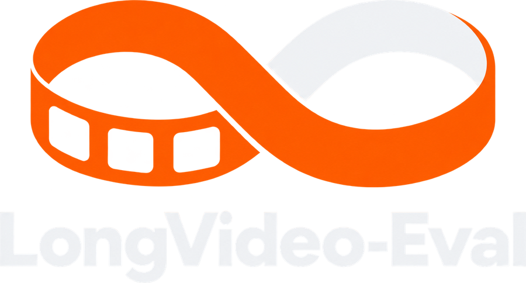

LongVideo-Eval is evaluation infrastructure for long-video intelligence: a system-aware, complete-cost harness that compares long-video pipelines under fixed backbones, matched evidence budgets, and one shared cost ledger spanning video-side and model-side work.
Long-video methods are compared by accuracy at a matched number of visual tokens. That leaves out most of what a long video costs. A keyframe selector decodes and scores hundreds of candidate frames to keep sixteen. A token pruner runs the full vision encoder before discarding most of its output. LongVideo-Eval makes four things the same for everyone, so the only thing left to compare is the idea.
Every method is a plug-in for one stage of the same pipeline. Everything around it is shared.
Same backbone, same decoded frame pool, same frame and token budget for every method.
Decoding, vision encoding, prefill and generation are measured by the harness, in one place.
Every run lands as a point on the same accuracy-cost plane, next to the strongest baselines.
Every way people make long video cheaper acts somewhere on the same five stages. We are mapping all of them, more than 80 methods across the directions below, and bringing them into one harness. Pick a direction to see where it acts and what it is charged for.
Metered: decode time, frames decoded
Metered: selection time
Metered: frames encoded, vision-tower load
Metered: tokens kept
Metered: prefill, generated tokens
LongVideo-Eval is also where new methods get built. You write only the part that is new, and the harness runs it against every baseline under the same input and the same budget. Take a new keyframe selector as an example.
@register("select", "my-selector") class MySelector(Selector): """Pick the frames worth looking at.""" def select(self, pool, query, budget): scores = self.score(pool.frames, query) keep = top_k(scores, budget.frame_count) return Selection(indices=keep) # That is the whole method. The pool was decoded for you, # and its cost is already on your bill.
# your method $ longvideo-eval --model qwen3-vl-4b --task videomme \ --method my-selector --setup sel16f_pool256 # every baseline, same pool, same budget $ longvideo-eval --model qwen3-vl-4b --task videomme \ --method aks --setup sel16f_pool256 $ longvideo-eval --model qwen3-vl-4b --task videomme \ --method flashvid --setup iso256f $ longvideo-eval --model qwen3-vl-4b --task videomme \ --method lohi-semdiv --setup lohi128f_k8
| Method | Decoded | First token | Accuracy |
|---|---|---|---|
| my-selector | 256 | yours | yours |
| LoHi-SemDivresolution | 128 | 3.9 s | 66.8 |
| Dense low-resresolution | 256 | 6.0 s | 64.4 |
| BOLTkeyframe | 256 | 6.0 s | 60.8 |
| FlashVIDpruning | 256 | 9.0 s | 59.3 |
| AKSkeyframe | 256 | 6.0 s | 57.3 |
| CLIP top-kkeyframe | 256 | 6.0 s | 57.2 |
| VisionZippruning | 256 | 8.2 s | 57.0 |
# a new benchmark: one task file $ longvideo-eval --task lvbench --method my-selector ... # a new budget: one line "sel32f_pool512": Budget(frame_count=32, decode_budget=512) # a new kind of cost: one field, metered for every method class CostRecord: decode_seconds: float frames_decoded: int llm_visual_tokens: int prefill_tokens: int thinking_tokens: int # reasoning is not free rounds: int # neither is asking twice
LongVideo-Eval started from the lessons of LoHi and is built as a long-term project: a common ground where the whole field can be measured the same way, and a workbench that keeps up with it.
Token pruning, keyframe selection and resolution allocation on the Qwen3-VL family, across Video-MME, MLVU and LVBench, every run with a full bill.
Agentic and multi-turn methods, where every extra round is charged. Streaming and memory models. More backbones, faster inference backends, more benchmarks, with full documentation and an API reference alongside.
A public accuracy-cost leaderboard that anyone can add a point to, with methods, datasets and budgets contributed by the people who build them.

LongVideo-Eval is updated continuously and built in the open. If you work on long video, there is a place for your work here, and we would like to build it with you.
Haoyue Bai*, Andong Deng, Sixun Dong*†, Nanxu Gong*, Zhengping Ji, Wei Li*, Qi Qian, Ming Yin*, Victor Zhu.
Listed alphabetically by family name. * Core contributor. † Project lead.
Advisor: Chen Chen
Your name belongs here too. Get involved.
LongVideo-Eval was inspired by LoHi and builds on a line of work on efficient multimodal inference. If it is useful to you, please cite it.
The harness follows the task and model conventions of lmms-eval so that benchmarks stay easy to port. We thank the authors of the methods and benchmarks it evaluates for releasing their code and data.
@inproceedings{dong2026lohi,
title = {Rethinking Long-Video Efficiency: A Joint Allocation Perspective on Frames, Pixels, and Front-End Latency},
author = {Dong, Sixun and Li, Wei and Deng, Andong and Qian, Qi and Zhu, Victor and Ji, Zhengping and Chen, Chen},
booktitle = {Advances in Neural Information Processing Systems (NeurIPS)},
year = {2026},
eprint = {2610.04318},
archivePrefix = {arXiv},
url = {https://arxiv.org/abs/2610.04318}
}
@inproceedings{dong2026mmtok,
title={Mmtok: Multimodal coverage maximization for efficient inference of vlms},
author={Dong, Sixun and Hu, Juhua and Zhang, Mian and Yin, Ming and Fu, Yanjie and Qian, Qi},
booktitle={International Conference on Learning Representations},
volume={2026},
pages={48075--48099},
year={2026}
}
@article{dong2026rethinking,
title={Rethinking Model Efficiency: Multi-Agent Inference with Large Models},
author={Dong, Sixun and Hu, Juhua and Li, Steven and Wen, Wei and Qian, Qi},
journal={arXiv preprint arXiv:2604.04929},
year={2026}
}